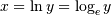
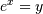
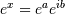
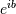
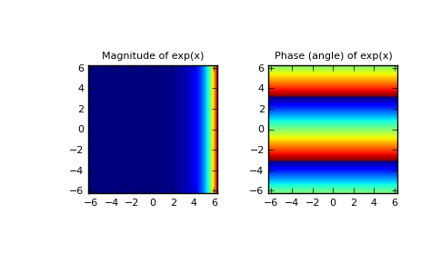

numpy.exp¶
- numpy.exp(x[, out]) = <ufunc 'exp'>¶
Calculate the exponential of all elements in the input array.
Parameters : x : array_like
Input values.
Returns : out : ndarray
Output array, element-wise exponential of x.
See also
Notes
The irrational number e is also known as Euler’s number. It is approximately 2.718281, and is the base of the natural logarithm, ln (this means that, if , then . For real input, exp(x) is always positive.
For complex arguments, x = a + ib, we can write . The first term, , is already known (it is the real argument, described above). The second term, , is , a function with magnitude 1 and a periodic phase.
References
[R18] Wikipedia, “Exponential function”, http://en.wikipedia.org/wiki/Exponential_function [R19] M. Abramovitz and I. A. Stegun, “Handbook of Mathematical Functions with Formulas, Graphs, and Mathematical Tables,” Dover, 1964, p. 69, http://www.math.sfu.ca/~cbm/aands/page_69.htm Examples
Plot the magnitude and phase of exp(x) in the complex plane:
>>> import matplotlib.pyplot as plt
>>> x = np.linspace(-2*np.pi, 2*np.pi, 100) >>> xx = x + 1j * x[:, np.newaxis] # a + ib over complex plane >>> out = np.exp(xx)
>>> plt.subplot(121) >>> plt.imshow(np.abs(out), ... extent=[-2*np.pi, 2*np.pi, -2*np.pi, 2*np.pi]) >>> plt.title('Magnitude of exp(x)')
>>> plt.subplot(122) >>> plt.imshow(np.angle(out), ... extent=[-2*np.pi, 2*np.pi, -2*np.pi, 2*np.pi]) >>> plt.title('Phase (angle) of exp(x)') >>> plt.show()
(Source code, png, pdf)

{kind=link}